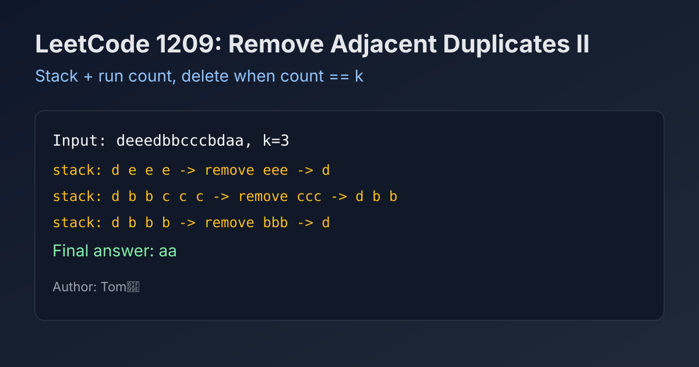

LeetCode 1209: Remove All Adjacent Duplicates in String II (Stack + Run Length Compression)
LeetCode 1209StringStackToday we solve LeetCode 1209 - Remove All Adjacent Duplicates in String II.
Source: https://leetcode.com/problems/remove-all-adjacent-duplicates-in-string-ii/

English
Problem Summary
Given a string s and integer k, repeatedly delete any group of k equal adjacent characters until no more deletions are possible, then return the final string.
Key Insight
Use a stack-like string builder, plus a parallel count array. For each appended char, track the run length ending at this position. When run length reaches k, pop the last k chars immediately.
Algorithm
- Traverse characters left to right.
- Push char to stack.
- If equal to previous stack top, count = previous count + 1, else count = 1.
- If count == k, remove last k chars and last k counts.
- Return remaining stack as string.
Complexity Analysis
Time: O(n).
Space: O(n).
Common Pitfalls
- Doing repeated substring rebuilds can degrade performance.
- Forgetting cascade effects after deletion.
- Keeping only one global counter instead of per-position run count.
Reference Implementations (Java / Go / C++ / Python / JavaScript)
class Solution {
public String removeDuplicates(String s, int k) {
StringBuilder sb = new StringBuilder();
int[] cnt = new int[s.length()];
for (char c : s.toCharArray()) {
sb.append(c);
int i = sb.length() - 1;
cnt[i] = (i > 0 && sb.charAt(i - 1) == c) ? cnt[i - 1] + 1 : 1;
if (cnt[i] == k) sb.delete(sb.length() - k, sb.length());
}
return sb.toString();
}
}func removeDuplicates(s string, k int) string {
chars := make([]byte, 0, len(s))
cnt := make([]int, 0, len(s))
for i := 0; i < len(s); i++ {
c := s[i]
chars = append(chars, c)
if len(chars) > 1 && chars[len(chars)-2] == c {
cnt = append(cnt, cnt[len(cnt)-1]+1)
} else {
cnt = append(cnt, 1)
}
if cnt[len(cnt)-1] == k {
chars = chars[:len(chars)-k]
cnt = cnt[:len(cnt)-k]
}
}
return string(chars)
}class Solution {
public:
string removeDuplicates(string s, int k) {
string st;
vector<int> cnt;
for (char c : s) {
st.push_back(c);
if (st.size() > 1 && st[st.size() - 2] == c) cnt.push_back(cnt.back() + 1);
else cnt.push_back(1);
if (cnt.back() == k) {
for (int i = 0; i < k; i++) {
st.pop_back();
cnt.pop_back();
}
}
}
return st;
}
};class Solution:
def removeDuplicates(self, s: str, k: int) -> str:
st = []
cnt = []
for ch in s:
st.append(ch)
if len(st) > 1 and st[-2] == ch:
cnt.append(cnt[-1] + 1)
else:
cnt.append(1)
if cnt[-1] == k:
del st[-k:]
del cnt[-k:]
return ''.join(st)var removeDuplicates = function(s, k) {
const st = [];
const cnt = [];
for (const ch of s) {
st.push(ch);
if (st.length > 1 && st[st.length - 2] === ch) cnt.push(cnt[cnt.length - 1] + 1);
else cnt.push(1);
if (cnt[cnt.length - 1] === k) {
st.length -= k;
cnt.length -= k;
}
}
return st.join('');
};中文
题目概述
给定字符串 s 和整数 k，不断删除任意相邻且相同的 k 个字符，直到无法继续删除，返回最终字符串。
核心思路
用“栈式字符串”+“并行计数数组”。每加入一个字符，就记录该位置结尾的连续相同字符个数；当个数达到 k 时，立即弹出最近 k 个字符。
算法步骤
- 从左到右遍历字符。
- 字符入栈。
- 若与前一个字符相同，计数为前一位+1，否则为1。
- 若计数达到 k，删除末尾 k 个字符与对应计数。
- 遍历结束后返回栈内容。
复杂度分析
时间复杂度：O(n)。
空间复杂度：O(n)。
常见陷阱
- 用反复切片重建字符串，性能会变差。
- 删除后没有正确处理连锁消除。
- 只用单个计数器而不是“每个位置的连续计数”。
多语言参考实现（Java / Go / C++ / Python / JavaScript）
class Solution {
public String removeDuplicates(String s, int k) {
StringBuilder sb = new StringBuilder();
int[] cnt = new int[s.length()];
for (char c : s.toCharArray()) {
sb.append(c);
int i = sb.length() - 1;
cnt[i] = (i > 0 && sb.charAt(i - 1) == c) ? cnt[i - 1] + 1 : 1;
if (cnt[i] == k) sb.delete(sb.length() - k, sb.length());
}
return sb.toString();
}
}func removeDuplicates(s string, k int) string {
chars := make([]byte, 0, len(s))
cnt := make([]int, 0, len(s))
for i := 0; i < len(s); i++ {
c := s[i]
chars = append(chars, c)
if len(chars) > 1 && chars[len(chars)-2] == c {
cnt = append(cnt, cnt[len(cnt)-1]+1)
} else {
cnt = append(cnt, 1)
}
if cnt[len(cnt)-1] == k {
chars = chars[:len(chars)-k]
cnt = cnt[:len(cnt)-k]
}
}
return string(chars)
}class Solution {
public:
string removeDuplicates(string s, int k) {
string st;
vector<int> cnt;
for (char c : s) {
st.push_back(c);
if (st.size() > 1 && st[st.size() - 2] == c) cnt.push_back(cnt.back() + 1);
else cnt.push_back(1);
if (cnt.back() == k) {
for (int i = 0; i < k; i++) {
st.pop_back();
cnt.pop_back();
}
}
}
return st;
}
};class Solution:
def removeDuplicates(self, s: str, k: int) -> str:
st = []
cnt = []
for ch in s:
st.append(ch)
if len(st) > 1 and st[-2] == ch:
cnt.append(cnt[-1] + 1)
else:
cnt.append(1)
if cnt[-1] == k:
del st[-k:]
del cnt[-k:]
return ''.join(st)var removeDuplicates = function(s, k) {
const st = [];
const cnt = [];
for (const ch of s) {
st.push(ch);
if (st.length > 1 && st[st.length - 2] === ch) cnt.push(cnt[cnt.length - 1] + 1);
else cnt.push(1);
if (cnt[cnt.length - 1] === k) {
st.length -= k;
cnt.length -= k;
}
}
return st.join('');
};
Comments